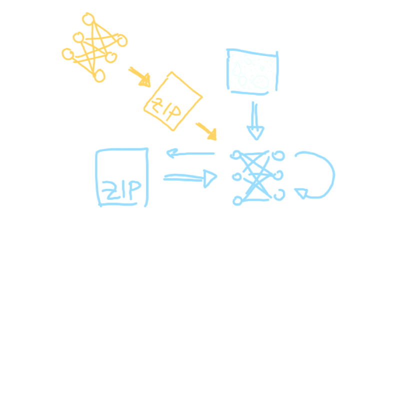
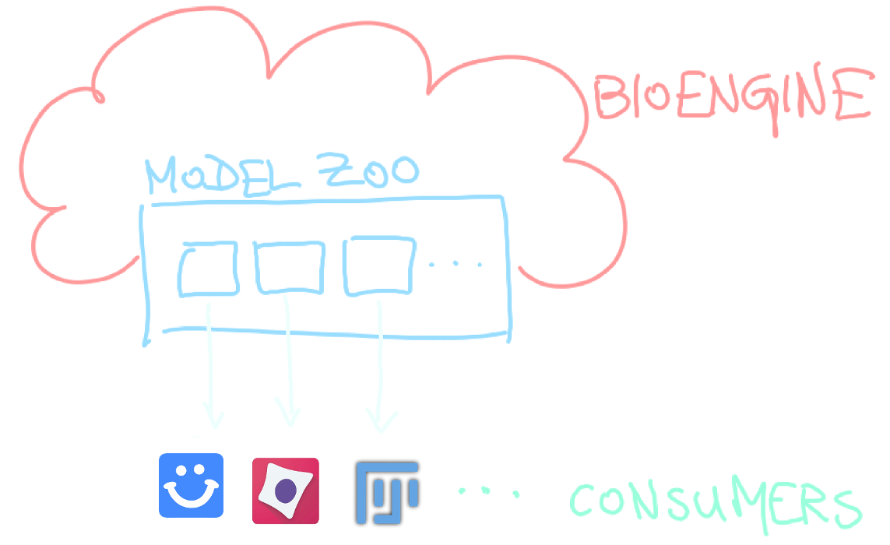

Deep dive with Fiji
The story of CSBDeepContext
Context
Who am I?
- Trained Media Computer Scientist
- ♥ Open Source
- Research Software Engineer
Context

Context › Center for Systems Biology Dresden
Context › The Fiji / ImageJ community
Deep learning for microscopy at CSBD
Deep learning for microscopy at CSBD
Deep Learning in Fiji?
Deep Learning in Fiji?
Toolset for
Deep Learning in Fiji
Toolset for DL in Fiji
imagej-tensorflow
- Java library for dealing with TensorFlow in ImageJ
- https://github.com/imagej/imagej-tensorflow
Toolset for DL in Fiji › imagej-tensorflow
Toolset for DL in Fiji › imagej-tensorflow
Toolset for DL in Fiji › imagej-tensorflow
Edit › Options › TensorFlow..
Toolset for DL in Fiji
CSBDeep for Fiji
- Toolkit for running image to image prediction
on pretrained networks - https://imagej.net/CSBDeep/
Update Site: https://sites.imagej.net/CSBDeep/
Toolset for DL in Fiji › CSBDeep for Fiji
Toolset for DL in Fiji › CSBDeep for Fiji
Toolset for DL in Fiji › CSBDeep for Fiji
Plugins › CSBDeep › Run your network
Toolset for DL in Fiji › CSBDeep for Fiji
Integration
- CSBDeep can be used as a library to run
prediction from a script / plugin - e.g. StarDist, DeepImageJ are using CSBDeep
Plugins › CSBDeep › Demo › ..
Toolset for DL in Fiji
CSBDeep (python)
Toolset for DL in Fiji › CSBDeep (python)
Toolset for DL in Fiji › CSBDeep (python)
Toolset for DL in Fiji › CSBDeep for Fiji
Toolset for DL in Fiji
Training
Toolset for DL in Fiji › Training
Unsupervised training with N2V
Toolset for DL in Fiji
Training
Toolset for DL in Fiji
Training
Toolset for DL in Fiji › Training
N2V for Fiji
- one-lick solution for content aware denoising
- https://github.com/juglab/N2V_fiji/
Update Site: https://sites.imagej.net/N2V/
Toolset for DL in Fiji › Training › N2V for Fiji
- Build the graph in python ..
Toolset for DL in Fiji › Training › N2V for Fiji

- .. train the model in Java
Toolset for DL in Fiji › Training › N2V for Fiji
- .. run prediction in Java
Plugins › CSBDeep › N2V › train + predict
Future work
Future work
BioImage Model Zoo
Future work › BioImage Model Zoo
?
Future work › BioImage Model Zoo

Future work › BioImage Model Zoo
- YAML Specification
- https://github.com/bioimage-io/configuration_draft
- ImageJ Model Zoo Consumer
- https://github.com/imagej/imagej-modelzoo/
Thank you for your attention!